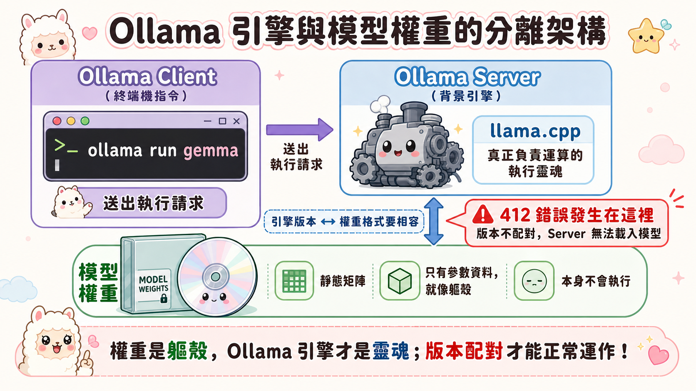
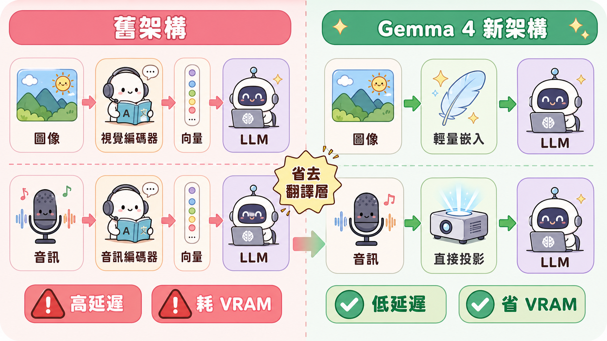
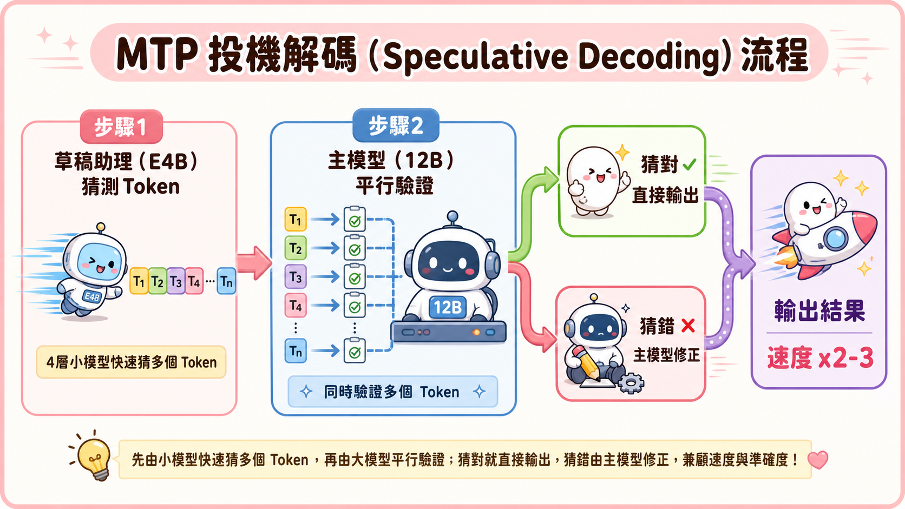

當我們在終端機按下 Enter：從一次「412 錯誤」說起
在本地端運行大型語言模型（LLM）的開發者，可能都遇過這樣的挫折：滿懷期待地輸入 ollama pull gemma4:12b，終端機卻冷冷地吐出 Error 412: The model you are attempting to pull requires a newer version of Ollama。當你急忙更新到最新的穩定版，卻發現錯誤依舊，必須手動尋找尚未正式釋出的預發布版本（Pre-release）才能順利下載。
更令人困惑的是，當模型好不容易跑起來，你上傳了一段音訊，它卻毫無反應。翻開官方規格表，赫然發現原本標榜「文字、影像、聲音」全能的三模態 Gemma 4 12B，在本地端的運作說明中，支援模態那一欄卻只寫著：「文字、圖像」。
這些看似瑣碎的 Bug、版本衝突與功能限縮，背後其實隱藏著當前 AI 發展最關鍵的硬體邊界掙扎：我們如何在有限的本機資源（例如 16GB 記憶體）中，壓榨出極限的多模態智能？
載具與靈魂的二分法：為什麼「更新軟體」能拯救模型？
要理解這個問題，我們必須先釐清一個常被混淆的核心概念：模型權重（Model Weights）與執行引擎（Engine/Harness）的關係。
很多人誤以為下載了模型檔案，它就是一個可以執行的「軟體」。但實際上，模型權重只是一堆靜態的「矩陣數據」——它是一具沒有靈魂的軀殼。真正負責將這些矩陣載入記憶體、調度 GPU/CPU 進行矩陣乘法，並為其插上 API 翅膀的，是像 Ollama 這樣的背景執行引擎。
這是一種典型的 客戶端-伺服器（Client-Server）架構：
- Ollama Server（
ollama serve）：在背景默默運行，底層封裝了基於 C++ 的高階推論核心 llama.cpp。它負責處理最髒最累的硬體加速（如 Apple Metal 或 NVIDIA CUDA）。 - Ollama Client（
ollama run）：是我們在終端機輸入的指令，它僅僅是個發送 HTTP 請求給本地伺服器（Port 11434）的傳聲筒。
當 Google 發表了全新架構的 Gemma 4 時，靜態的模型檔案包含了全新的 Tokenizer（分詞器）結構與記憶體佈局。此時，如果背景的 Ollama 引擎沒有升級，它就像是用舊版的 DVD 播放器去讀 4K 藍光光碟，自然會吐出 412 錯誤或是一堆亂碼。

歷史的錨點：2026 年 6 月 3 日的官方重磅發布
在 2026 年 6 月 3 日，Google 官方部落格發表了一篇由 Olivier Lacombe 與 Gus Martins 聯手撰寫的重磅技術公告：Introducing Gemma 4 12B: a unified, encoder-free multimodal model。
這篇公告之所以引發全球開源 AI 社群的強烈關注，是因為它標示了 Google 在「中型開源模型」多模態整合上取得的里程碑。文章的核心內容圍繞在如何降低本地端執行的延遲，並正式推出 gemma-skills 技能庫，藉此降低自主 AI 代理人（Agents）的開發門檻。這不僅僅是發表一組模型參數，更是對本地 AI 開發生態系的一次全面性升級宣示。
機制解構：無編碼器架構與 3 倍速的「草稿助理」
在 Google 官方發布公告中，Gemma 4 12B 展現了兩項顛覆傳統的底層機制：
1. 拋棄翻譯官：無編碼器（Encoder-Free）架構
傳統的多模態模型像是一個「跨國會議」：影像有影像編碼器（如 CLIP），音訊有音訊編碼器。它們必須先把影像和聲音「翻譯」成語言模型看得懂的向量，再塞給 LLM。這種多次轉手不僅耗費時間（高延遲），還會吞噬大量 VRAM。
Gemma 4 12B 選擇了更直覺的作法：撤除翻譯官，讓 LLM 直接用眼睛看、用耳朵聽。
- 視覺（Vision）：用一個極輕量的嵌入模組（僅做矩陣相乘與位置歸一）取代視覺編碼器，影像直接輸入 LLM 核心骨幹進行處理。
- 音訊（Audio）：完全移除音訊編碼器，將 raw audio（原始音訊訊號）直接投影至與文字 Token 相同的維度空間。LLM 用同一個大腦直接理解三種模態，這使得運算延遲大為降低。

2. 投機解碼：MTP (Multi-Token Prediction) 助理機制
在本地端運算時，最常遇到的瓶頸是「Token 輸出太慢」。為此，Google 引入了 MTP 輔助模型（MTP Drafters） 機制：
- 這就像是一位「草稿助理」。它是一個極輕量（僅 4 層）的小模型，會搶在前面快速「猜測」接下來的數個 Token 並打出草稿。
- 主模型（如 E4B 或 12B）則扮演審核的「主管」，利用平行計算瞬間驗證草稿。如果猜對了，就直接輸出；如果猜錯，再由主模型修正。這種「投機解碼」在不損失任何精度下，能讓本地推論速度暴增 2 到 3 倍。

記憶體防線的妥協：為什麼本地 12B 沒有語音？
回到最初的疑問：既然 12B 支援語音，為什麼在 Ollama 上下載的版本卻被「閹割」了？
這是一場理性的邊界妥協。
在本地端（Edge）部署中，硬體的物理限制是殘酷的防線。12B 模型（約 120 億參數）即使經過 4-bit 量化，其靜態模型本體也需要佔用約 7.4GB 的記憶體。一旦運行，還需要保留龐大的 KV Cache 空間給 Context Window（256K 視窗）。
如果此時還要強制加入一個約 300M 參數的音訊編碼器，這多出來的記憶體與運算開銷，極有可能成為壓垮本地端 16GB 記憶體設備的最後一根稻草。
因此，在 Ollama 的模型庫設計中進行了功能剪枝。以下是 Gemma 4 家族在 Ollama 上的完整選型指南：
Ollama 使用者的 Gemma 4 快速選型與比較指南
| Ollama 模型標籤 | 類型 | 活動參數 | 上下文 | 支援模態 | 適合場景 |
|---|---|---|---|---|---|
| gemma4:e2b | Edge | 2.3B（總 5.1B） | 128K | 文字・圖像・音訊 | 入門級／行動端部署 適合手機、平板或物聯網設備。提供最低延遲的本地語音互動與基礎圖像理解。 |
| gemma4:e4b | Edge | 4.5B（總 8B） | 128K | 文字・圖像・音訊 | 日常輕量本地助理 適合入門級筆電，能流暢執行語音、視覺與文字混合任務。 |
| gemma4:12b | Workstation | 11.9B（量化後約 7.4GB） | 256K | 文字・圖像 （無音訊） | 中階個人工作站（主流推薦） 適合 16GB 以上 Mac 或 PC。平衡運算開銷與推理精度，適合程式碼與本地 AI Agent。 |
| gemma4:26b | Workstation | 3.8B（總 25.2B MoE） | 256K | 文字・圖像 （無音訊） | 高吞吐量本地推理 混合專家模型，每次僅激活 3.8B 參數，速度快且推理深度逼近大型模型。 |
| gemma4:31b | Workstation | 30.7B | 256K | 文字・圖像 （無音訊） | 高精度本地極限推理 需大容量 VRAM 工作站。適合高精度 OCR 文檔解析與複雜邏輯推導。 |
| gemma4:31b-cloud | Cloud | 託管於雲端 | — | 文字・圖像 （無音訊） | 免本地硬體負荷 當本地設備無法負擔 31B 運算，但需要最強文字與圖像推理時選用。 |
對於 Ollama 使用者來說，如果想體驗包含「語音模態」的完整離線對話，請直接拉取 gemma4:e4b；如果需要強大的程式代碼與視覺分析，且不需要語音輸入，則 gemma4:12b 是最主流的平衡之選。
落地指南：在電腦上完整解鎖 Gemma 4 語音功能
如果您身處電腦端（如 macOS 環境），並希望完整解鎖並體驗 Gemma 4 語音多模態的強大功能，您可以依據自身需求選擇以下三種路徑：
1. 零門檻免安裝路徑：Hugging Face 網頁端 Space
如果您只是想測試它的語音理解能力，不想耗費本機運算資源：
- 作法：使用瀏覽器開啟 Hugging Face，搜尋 Google 官方釋出的 Gradio 展示空間。直接透過瀏覽器調用您的電腦麥克風進行語音對話。
2. 本地完全離線路徑：Google AI Edge Eloquent 應用程式
如果您需要「在飛機上」或「無網路環境」下，完全利用本機晶片進行隱私安全的語音處理：
- 作法：下載並安裝 Google 官方專為桌上型電腦與筆電開發的離線展示 App Google AI Edge Eloquent。它擁有精美的 GUI，能直接調用本地顯示卡，進行即時的語音轉錄、整理與翻譯。
3. 開發者指令列路徑：LiteRT-LM CLI
如果您打算將語音模型整合進自己的自動化腳本或工作流中：
- 作法：參考 LiteRT-LM 快速開始指南。在終端機中透過 TFLite 格式的模型，直接輸入語音檔（
.wav）進行推論：
litert-lm --model gemma-4-e4b.tflite --audio test.wav --prompt "請幫我摘要這段會議錄音"結語：迎接本地智能的黃金交叉
Gemma 4 12B 的誕生，不僅僅是參數量的調整，更是 AI 從「雲端巨獸」走向「本地自主」的指標性事件。透過無編碼器架構的物理簡化，以及 MTP 助理的速度加持，我們得以在日常使用的筆記型電腦上，享受到流暢的多模態智能。
儘管因為記憶體的物理邊界，我們必須在語音與模型大小之間做出取捨，但隨著編譯引擎（如 Ollama 與 llama.cpp）的快速迭代，本地端運算與雲端服務的黃金交叉，已經近在眼前。